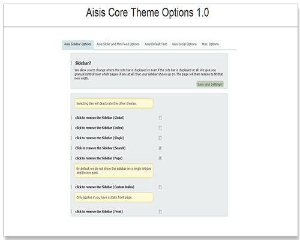
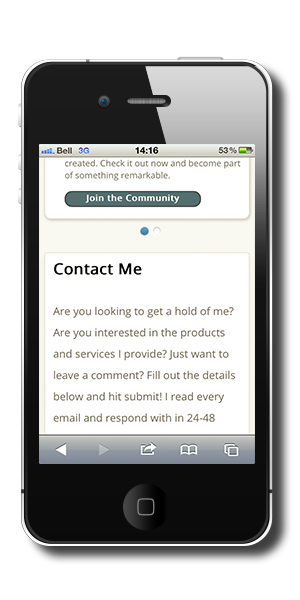

Aisis-Framework
Aisis is a free open source, 100% GPL compatible WordPress theme framework with more emphasis on framework then theme. While we manage to keep the theme framework easy to use for the average user Aisis it’s self is a revolution in theme framework development as we give the developers and designers the tools they need to build packages, child themes and plugins on top of our platform full of rich and well documented API’s.
What is Aisis?

Aisis is a theme framework geared towards developers and designers looking for a platform to develop on and against. Aisis is also a framework that the average user can use to display content while having basic options for changing things such as default text, adding widgets, displaying sidebars and or sliders and mini feeds.
Options
Aisis provides basic options for the user to customize their site and their user’s experience across the site. We provide in house editors for you to do a bit more advanced customizations and changes across the site.
Silent Auto Update
Aisis comes with a fabulous, never before done option called “Silent Auto Update.” No other theme, theme framework or even WordPress it’s self has this ability which essentially checks the server for a new version and updates for you without you ever knowing.
Note: We do not recommend this if you have to input ftp information in order to update your plugins or themes.
Responsive Design
Aisis is designed to be responsive. That means no matter the device you own, the content will scale to that size and as the content gets smaller and smaller we remove elements that would otherwise get in the way of reading the content you want and engaging in its conversation.
Aisis is a Developers Dream Come True
Aisis is developed for, designed for and catered to developers. We provide complete openness without platform and allow you to build your own products and services while making sure to get out of your way.
We give you rich documentation, well documented examples and articles on best practices concerning the development of Aisis. We have and continue to, work hard to bring you a platform that works across all devices and allows you to build responsive, beautiful products.